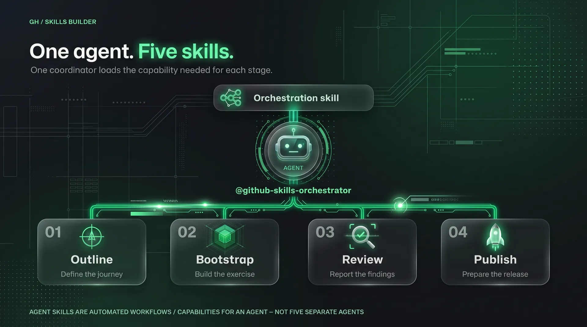
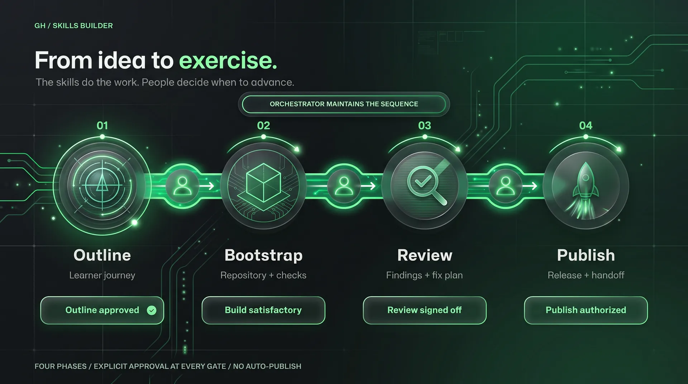
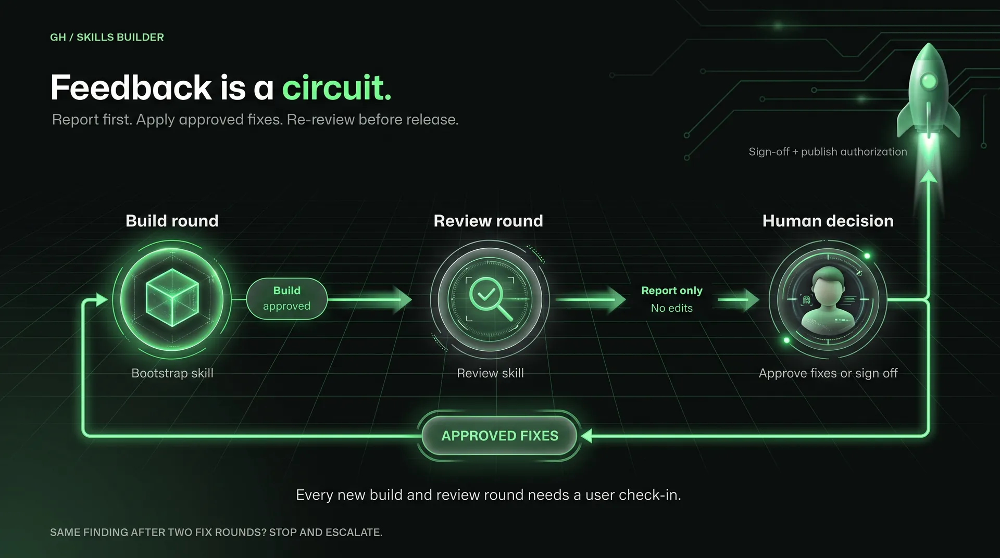

gh-skills-builder
Install once.
Reuse the workflow.
Live workshop · 60 minutes
GitHub Copilot app/CLI and the gh-skills-builder plugin.
Watch one idea become Cleared for Takeoff: A Copilot Quick-Start, a 15–20-minute GitHub Skills exercise built on Tailspin Toys. Every prompt from the session is on this page, so you can replay it yourself.
An installable toolkit that adds reusable capabilities to GitHub Copilot.
gh-skills-builder
Install once.
Reuse the workflow.
@github-skills-orchestrator coordinates the work and asks for your approval.
Reusable workflows and capabilities the agent loads, one for each phase plus one to run the whole loop.
A plugin packages customizations. It is not a separate AI model.
gh-skills-builder is available in the Awesome Copilot marketplace.
Open Plugins in the Copilot app. Find gh-skills-builder.
Review the source and capabilities. Install and enable it for your session.
Choose the orchestrator agent. Ask it to run the exercise lifecycle.
Install
copilot plugin install gh-skills-builder@awesome-copilotIf the CLI says the marketplace is unknown, register it once, then rerun the install
copilot plugin marketplace add github/awesome-copilotConfirm the install
copilot plugin list@github-skills-orchestrator is the agent; the slash commands are skills.
Mostly live. Checkpoints protect the demo: every live segment has a hard stop and a rehearsed fallback.
Plugins, installation, and the quick-start scenario.
Three learner steps, a name, and a private repo. /create-github-skills-outline, then handoff.sh.
From outline to files, plus one fail-to-pass check. /bootstrap-github-skills-exercise
Report findings, approve one fix, review again. /review-github-skills-exercise
Evidence and a launch plan, without publishing. /publish-github-skills-exercise
Takeaways by 0:45, with /orchestrate-github-skills-exercise shown but not run. A buffer runs 0:45–0:50, and Q&A from 0:50 is protected.
Build a 15–20-minute Copilot quick-start inside Tailspin Toys.
Tailspin Toys as MIT starter code. Learners customize Copilot, not app features.
Repository instructions. Consistent quality reports. A report-only QA agent.
Working title: Cleared for Takeoff: A Copilot Quick-Start.
| Learner step | Artifact | What validation can observe |
|---|---|---|
| 1. Add a TypeScript documentation convention | .github/ | A new, clearly delimited workshop section requires TSDoc for new or changed exported TypeScript functions, preserving existing instructions. |
| 2. Make quality reporting consistent | .github/ | The existing skill keeps its frontmatter and gains a reporting contract: command, passed/failed/blocked status, evidence, and the reason for any failed or blocked check. No invented results. |
| 3. Define a report-only QA agent | .github/ | Valid name and description frontmatter, plus instructions to report requirements with evidence, ask before implementation changes, and never commit or open PRs. |
Validation checks what each learner wrote, not just whether a file exists, and not whether they invoked Copilot.
The agent does the heavy lifting. You own the learning experience.
Same pattern for educators, maintainers, event organizers, DevRel, startups, and enterprises.
One coordinator loads the capability needed for each stage. The skills do the work; people decide when to advance.

Decide what success looks like: outcome, identity, and what a workflow can actually check.
/create-github-skills-outline
Make the outline runnable: README, step files, and workflows in the current repository.
/bootstrap-github-skills-exercise
Report findings without editing. Approve one fix, then review again.
/review-github-skills-exercise
Prepare first. Authorize separately. Release-ready content is not permission to publish it.
/publish-github-skills-exercise
The fifth skill, /orchestrate-github-skills-exercise, runs the whole loop with the same approval gates.


| Approval | When | What it approves | Side effect |
|---|---|---|---|
| Gate 1 | 0:06–0:12 | The outline and the exercise identity | None |
| Hand-off Authorization | 0:12–0:16 | Running handoff.sh once | Private authoring repo, starter commit, and push |
| Gate 2 | By 0:27 | Accepting the build before review | None |
| Fix round (Prompt 3b) | 0:30–0:35 | One targeted fix for one real finding | Edits in the authoring repo |
| Gate 3 | By 0:35 | No known release blockers; prepare readiness only | None |
| Publication (Prompt 4b) | 0:35–0:41 | A public template at a named owner/repository | Never given on stage |
These are the exact prompts from the session. Copy one, replace each <placeholder>, then send it.
| Placeholder | Replace with |
|---|---|
<workshop-repo> | The absolute path of the folder that holds handoff.sh. A quick chat has no working directory, so a relative path will not work. |
<you> | The account or organization that will own the private authoring repository. |
<paste the approved outline artifact> | The whole outline block returned after Gate 1. |
<finding-id> | The real review finding you choose to fix. |
<demo-owner>/ | The publication target to show, but not authorize, in Prompt 4b. |
Use one quick chat for Prompt 1, Gate 1, and the Hand-off Authorization. Then use one project session, opened on the new repository, for Prompts 2–4.
Interactive is not a security boundary. Tool permissions and explicit authorization still matter.
Prompt 1 · Create the outline
@github-skills-orchestrator Use /create-github-skills-outline to design a 15–20-minute GitHub Skills exercise for a new Tailspin Toys teammate.
Keep exactly three graded learner steps:
1. Add a clearly delimited workshop section to .github/copilot-instructions.md requiring TSDoc for new or changed exported TypeScript functions. Preserve existing instructions.
2. Customize .github/skills/quality-checks/SKILL.md so reports include command, passed/failed/blocked status, evidence, and reasons for failed or blocked checks. Preserve frontmatter. Never invent command results.
3. Create .github/agents/qa.agent.md with name and description frontmatter. It reports requirements with evidence, asks before implementation changes, and never commits or opens PRs.
For each step include a short Theory block, one Activity, success criteria, a repository-observable validation signal, and useful failure feedback. Validate the content of learner artifacts, not just file existence. Do not claim Actions can prove which local app mode or agent was used.
This is a small slice of the Dev Days Copilot app scenario, not a conversion of the full lab. Do not add filtering, application changes, dependency installation, database setup, browser tests, feature PR/merge requirements, or extra graded steps. Mention Agent Merge, MCP, and canvases only as optional next steps.
Propose a title and three lowercase-hyphenated repository names containing copilot-app, without a skills- prefix. Recommend one.
We are in a quick chat with no repository. After I approve the identity and outline, return the complete standalone exercise-outline.md content in one Markdown code block. Start with # <approved title>, then Repository name: <approved name>, then Learner copy: skills-<approved name>. Do not claim a file has been saved.Gate 1 · Approve the outline and identity
Approved. Use "Cleared for Takeoff: A Copilot Quick-Start" and repository name copilot-app-cleared-for-takeoff. Keep exactly the three approved learner steps. Return the complete outline artifact in one Markdown code block, including the title, Repository name, and Learner copy header. Do not create a repository or claim to have saved a file.Hand-off Authorization · Create the private authoring repo
Hand-off Authorization: I authorize running this existing workshop script once to create my private authoring repository, import the Tailspin starter code, commit, and push. This is not permission to publish a public template or run the exercise lifecycle.
<workshop-repo>/handoff.sh <you> copilot-app-cleared-for-takeoff
Show the output and local folder path. Do not create other repositories or files beyond the script's work.Or run the hand-off yourself in a terminal
<workshop-repo>/handoff.sh <you> copilot-app-cleared-for-takeoffPrompt 2 · Build the exercise
@github-skills-orchestrator Phase I is approved. Use /bootstrap-github-skills-exercise with this outline artifact:
<paste the approved outline artifact>
First save that artifact verbatim to .github/exercise-outline.md. Use its identity header for the README and Copy Exercise badge. Stop and ask if its repository name differs from this repo.
Build exactly three graded steps plus the standard completion/review material. Preserve Tailspin's MIT LICENSE and credit github-samples/tailspin-toys in the README.
Do not complete the learner tasks: leave the new TSDoc workshop section, the quality-reporting contract, and qa.agent.md for the learner to add. Inspect the existing starter files first so validation requires a meaningful learner change instead of passing the baseline.
Step 0 opens the normal exercise instructions issue only; do not seed any other issues. Keep existing Tailspin workflows intact, but do not depend on their checks for exercise progression.
Use lightweight artifact checks for all three steps. Do not run or require npm ci, app builds, database setup, Playwright, or application tests. Check frontmatter and required reporting/behavioral instructions with helpful failure feedback, not file-exists or arbitrary whole-file text matching alone.
Follow the GitHub Skills workflow contract, use scoped permissions, and inspect workflow event/path interactions. Report what was actually validated and what remains untested. Do not publish or create another repository.Gate 2 · Accept the build
I accept this build round. Do not make more changes. I will send the report-only review request next.Prompt 3 · Report-only review
@github-skills-orchestrator Use /review-github-skills-exercise. Report findings without editing files.
Check the approved three-step scope, learner clarity and accessibility, workflow safety, and validation reliability. In particular:
- The untouched starter must not already pass the three learner checks.
- Each correct learner artifact should pass; an incomplete or incorrect artifact should fail with useful feedback. Inspect and, where feasible, exercise those cases.
- Step 0 must open only the exercise instructions issue and create no other issues.
- No grade should depend on npm, an app build, browser tooling, or proof that the learner used a local Copilot mode.
- Repository-observable checks of written policies must not be described as proof of model behavior.
Prioritize actual release blockers and include evidence and untested risks. If no findings are supported, say so; do not invent a finding for the demo.Prompt 3b (optional) · Approve one fix
I approve a bootstrap fix round for <finding-id> only. Make the targeted fix and run its relevant checks. Stop for my build approval before running the review again.Accept the fix and review again
I accept the fix round. Re-run the report-only review with the same criteria.Gate 3 · Sign off the review
No known release blockers remain in the reviewed build. Prepare release-readiness materials only; do not publish.Prompt 4 · Prepare release readiness
@github-skills-orchestrator Use /publish-github-skills-exercise for the approved three-step exercise. Read its identity from .github/exercise-outline.md.
Prepare a short readiness report: validation evidence, untested risks, a PR description, brief release notes, and a launch checklist. Clearly separate completed checks from required fresh-copy testing.
Do not create or transfer repositories, change visibility, push, or publish. Stop at the authorization boundary.Prompt 4b · Show the publish plan, without authorizing it
Use /publish-github-skills-exercise to show, without executing, a plan for publishing this exercise to <demo-owner>/<approved-name> as a public template.
Show the exact target, visibility, changes, commands, and readiness blockers. Wait for separate explicit authorization. This message is not authorization to create, push, transfer, change settings, or publish.Orchestrate every phase with the same gates
@github-skills-orchestrator Use /orchestrate-github-skills-exercise to coordinate the same three-step Tailspin quick-start. Read the approved outline from .github/exercise-outline.md. Stop after each build for approval; review without edits; request separate approval for fixes and any publication. Do not expand the scope or publish without explicit authorization.Moves the approved outline from a quick chat into a real repository.
<owner>/<name> as a private repository with gh and clones it under parent-dir (default ~/src/workshop-demo).main.--dry-run builds the same commit locally without creating or pushing anything on GitHub. It still clones Tailspin, so it needs a network connection. The script requires an authenticated gh, git, and rsync.
Make it executable, then try a dry run
chmod +x handoff.sh
./handoff.sh --dry-run <you> copilot-app-cleared-for-takeoffThe full 14-slide deck. Click the slides, then use the arrow keys, or use the buttons below. On a phone, swipe.
In the new tab, press F for full screen. The deck is a single HTML file built with Bento; save it to present offline.
Bring an idea. Build a hands-on experience.
The plugin: one orchestrator agent and five Agent Skills, available in Awesome Copilot.
The marketplace for community Copilot plugins, agents, skills, and instructions.
The MIT-licensed sample app the exercise is built on. handoff.sh fetches it with its license.
The workshop that inspired this smaller scenario.
Hands-on courses that run inside GitHub repositories, the format this workshop builds.
Plugins, agents, skills, and custom instructions.